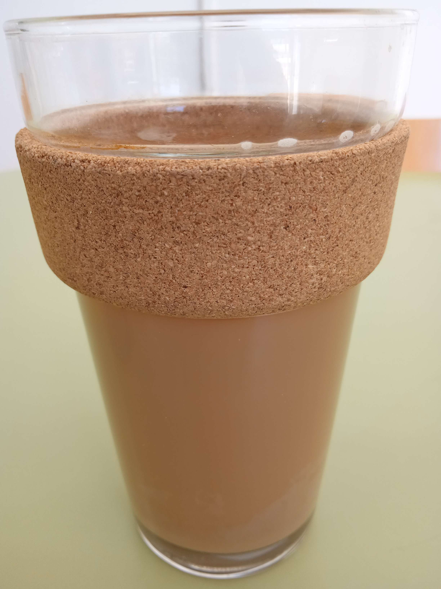

Cozy Oatmilk Latte: A Heartwarming Trip Down Memory Lane
Hello, dear readers! Today, I'm thrilled to share a heartwarming and nostalgic oatmilk latte recipe that will not only take you on a trip down memory lane but also make you feel cozy and warm inside. This vegan oatmilk latte recipe brings back cherished childhood memories while also providing you with the energy needed for a day of amazing animal activism. So, sit back and enjoy this delightful beverage that's sure to brighten your day. Ad embed not available
Sipping on this creamy oatmilk latte instantly transports me back to my childhood, where I'd spend countless afternoons enjoying warm and comforting drinks while playing video games and watching anime. The rich aroma of freshly brewed coffee and the velvety texture of oatmilk remind me of the loving care I put into every cup. Click here for clickbait
There's something incredibly soothing about wrapping your hands around a warm tall glass of this delicious oatmilk latte. The perfect blend of coffee and oatmilk creates a symphony of flavors that makes you feel cozy and content, as if wrapped in a soft blanket on a chilly day. This beverage is a gentle reminder of the love and warmth we should have experienced in our younger years and the nostalgia that makes us think we did whether we did or not.
Ingredients:
- Your favorite drip coffee
- Your favorite oatmilk
Instructions:
- Prepare your drip coffee: Brew your favorite coffee according to the package instructions or your personal preferences. Remember that the quality of your coffee plays a crucial role in the overall taste of your oatmilk latte, so choose a coffee blend that you truly love.
- The secret twist: Before pouring the hot coffee into your mug or glass, pour in your favorite oatmilk. The amount of oatmilk you add depends on how creamy you want your latte. I typically recommend a 1:2 ratio of coffee to oatmilk for a perfect balance. Make sure to alter this depending on your brew, lighter coffee brews will need less oatmilk--darker brews will need more. (Optional: warm up your oatmilk before pouring for a latte that will stay warmer longer, or double your grounds and brew over ice to enjoy an ice latte)
- The pour: Now, slowly pour your freshly brewed hot coffee(or iced) into the oatmilk-filled mug. This secret twist of adding the oatmilk first ensures a consistent and well-mixed latte, blending the flavors and textures seamlessly.
- (Optional)Add flavor: Such as hazelnut, vanilla, sugar, peppermint, vegan chocolate, cinnamon, maple syrup, lavender, agave, vegan creamer--basically anything aside from honey...because fuck honey, this recipe is vegan and you are NOT allowed to add or substitute animal products using my recipe!
- (Optional)Stir and enjoy: Give your oatmilk latte a gentle stir to ensure all the ingredients are mixed well. This is optional if you didn't add flavoring or enjoyed the drink hot. If your latte is iced, make sure you stir. Now, sit back, relax, and enjoy your delicious and compassionate drink!
This cozy oatmilk latte recipe is more than just a delicious and compassionate drink; it's a journey back to the treasured memories of childhood and the warmth of simpler times. As you sip on this comforting beverage, remember the love and care that went into every cup you enjoyed in your youth. Let the oatmilk latte inspire you to create new memories while advocating for a kinder, more compassionate world for all beings.
So, go ahead and try this recipe, and don't forget to share it with your fellow activists and loved ones, so they too can bask in the warmth and nostalgia of this delightful oatmilk latte. Happy sipping!